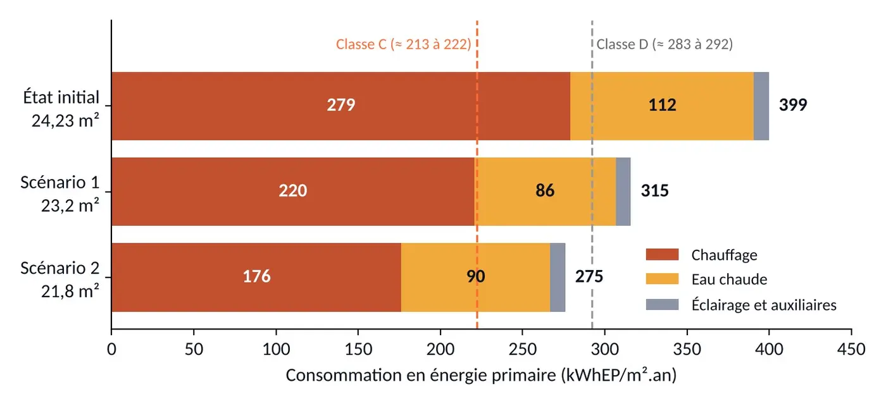

Rénovation énergétique d'un studio parisien classé F
Un studio de 24 m² en rez-de-chaussée d'un immeuble ancien, classé F au DPE : quels travaux pour sortir du statut de passoire, et jusqu'où aller ?
Un petit logement tout électrique
Le studio est chauffé par des convecteurs électriques, avec un ballon d'eau chaude électrique. Le DPE établi avant l'achat le classe en F, avec 411 kWh d'énergie primaire par m² et par an. Les acquéreurs voulaient savoir quels travaux engager, et s'il était possible d'atteindre la classe C.
Un modèle calé sur le DPE
L'étude a été menée sur pièces : DPE, dossier de diagnostics et plan du logement. BETTHER a reconstitué les parois et les équipements dans Pléiades, jusqu'à obtenir un état initial à 399 kWhEP/m².an, à 3 % du DPE officiel. Ce calage permet de mesurer le gain de chaque travaux de façon cohérente avec le futur diagnostic.
Une attention particulière a été portée aux règles des petites surfaces : sous 40 m², les seuils des classes sont relevés, et ils évoluent encore quand l'isolation par l'intérieur réduit la surface habitable.
Deux niveaux d'intervention
- Scénario 1 : isolation par l'intérieur des murs en pierre donnant sur l'extérieur, nouveaux radiateurs, ballon électrique connecté de 65 L et VMC hygroréglable.
- Scénario 2 : isolation de tous les murs déperditifs, y compris les murs en mâchefer qui donnent sur les circulations communes, avec les mêmes équipements.
| État initial | Scénario 1 | Scénario 2 | |
|---|---|---|---|
| Consommation estimée | 399 kWhEP/m².an | 315 kWhEP/m².an | 275 kWhEP/m².an |
| Classe énergie estimée | F | E | D |
| Gain en énergie finale | — | −24 % | −38 % |
| Dépense annuelle estimée | 950 à 1 290 € | 740 à 1 020 € | 630 à 870 € |
Deux classes gagnées, et une explication claire
Le scénario 2 fait passer le studio de F à D et réduit la consommation de près de 40 % : le logement sort du statut de passoire énergétique. La classe C n'est pas atteinte, et l'étude le dit franchement plutôt que de forcer les hypothèses.
Le graphique montre pourquoi : le chauffage baisse nettement d'un scénario à l'autre, mais l'eau chaude reste autour de 90 kWhEP/m².an, soit un tiers de la consommation restante. C'est elle qui bloque le passage en C.

Viser l'eau chaude pour aller plus loin
BETTHER conseille d'étudier, en complément du scénario 2, un appareil unique qui assure la ventilation et produit l'eau chaude en récupérant la chaleur de l'air extrait. C'est le levier le plus réaliste pour se rapprocher de la classe C sans toucher aux parties communes. Les points à vérifier sont listés : encombrement, rejet d'air, accord de la copropriété, acoustique et budget.
Un logement à faire sortir du F ou du G ?
Cette mission relève de notre audit énergétique volontaire. Décrivez votre projet et recevez une estimation immédiate, puis un devis détaillé sous 24 h. Vous pouvez aussi nous appeler au 06 18 13 76 45.
Étude réalisée par BETTHER en 2026, sur pièces et sans visite. Les classes indiquées sont des estimations : elles ne valent pas DPE.